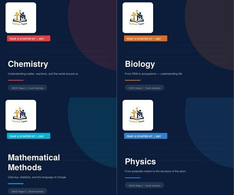
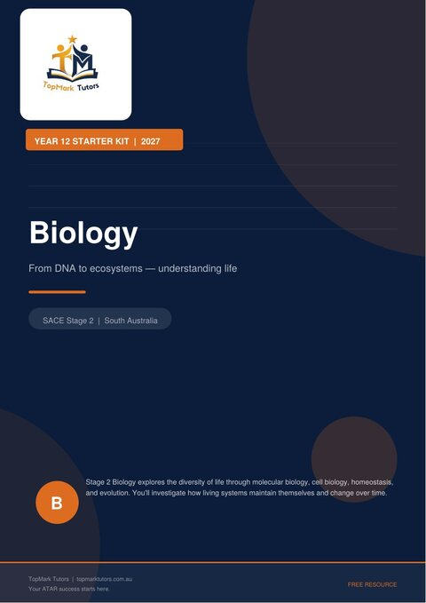
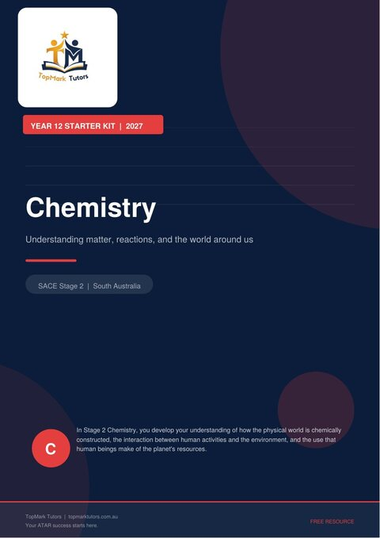
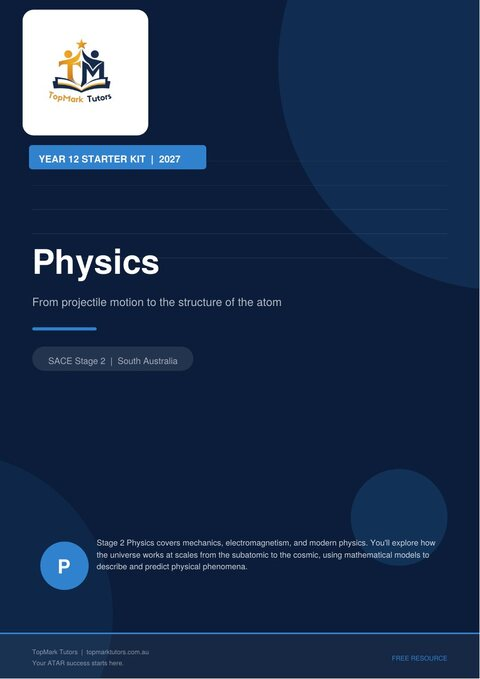
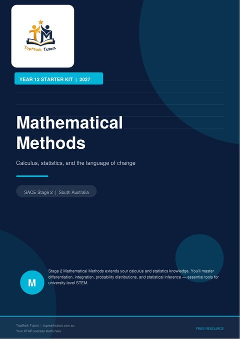
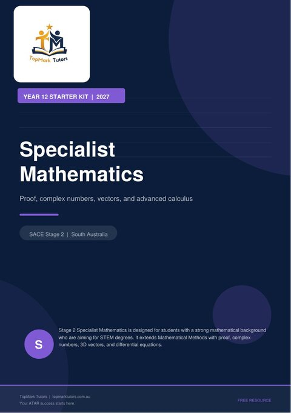
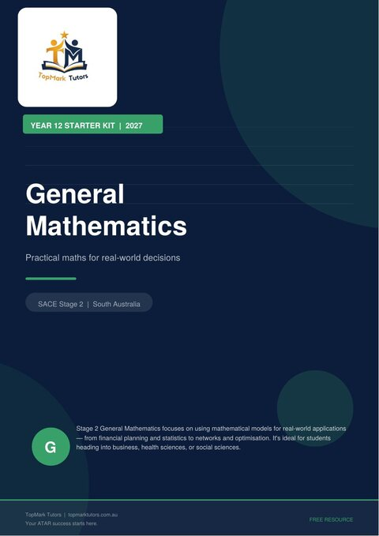
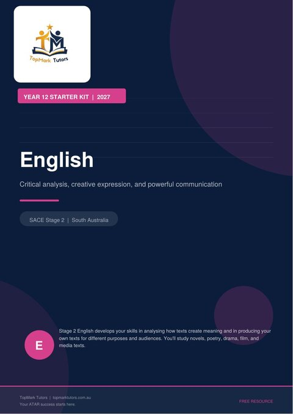

Starter kitYear 12 Starter Kit: Complete Set
51 pages • SACE Stage 2 • 2027
Every subject kit in one file: Biology, Chemistry, Physics, Mathematical Methods, Specialist Mathematics, General Mathematics and English. What you need from Stage 1, how the subject is assessed, the topics you will cover, the key formulas, the mistakes that cost marks, and a Year 12 timeline.
Download PDF
Starter kitYear 12 Starter Kit: Biology
7 pages • SACE Stage 2 • 2027
From DNA to ecosystems: understanding life. What you need from Stage 1, how the subject is assessed, the topics you will cover, the key formulas, the mistakes that cost marks, and a Year 12 timeline.
Download PDF
Starter kitYear 12 Starter Kit: Chemistry
7 pages • SACE Stage 2 • 2027
Understanding matter, reactions, and the world around us. What you need from Stage 1, how the subject is assessed, the topics you will cover, the key formulas, the mistakes that cost marks, and a Year 12 timeline.
Download PDF
Starter kitYear 12 Starter Kit: Physics
7 pages • SACE Stage 2 • 2027
From projectile motion to the structure of the atom. What you need from Stage 1, how the subject is assessed, the topics you will cover, the key formulas, the mistakes that cost marks, and a Year 12 timeline.
Download PDF
Starter kitYear 12 Starter Kit: Mathematical Methods
8 pages • SACE Stage 2 • 2027
Calculus, statistics, and the language of change. What you need from Stage 1, how the subject is assessed, the topics you will cover, the key formulas, the mistakes that cost marks, and a Year 12 timeline.
Download PDF
Starter kitYear 12 Starter Kit: Specialist Mathematics
8 pages • SACE Stage 2 • 2027
Proof, complex numbers, vectors, and advanced calculus. What you need from Stage 1, how the subject is assessed, the topics you will cover, the key formulas, the mistakes that cost marks, and a Year 12 timeline.
Download PDF
Starter kitYear 12 Starter Kit: General Mathematics
7 pages • SACE Stage 2 • 2027
Practical maths for real-world decisions. What you need from Stage 1, how the subject is assessed, the topics you will cover, the key formulas, the mistakes that cost marks, and a Year 12 timeline.
Download PDF
Starter kitYear 12 Starter Kit: English
7 pages • SACE Stage 2 • 2027
Critical analysis, creative expression, and powerful communication. What you need from Stage 1, how the subject is assessed, the topics you will cover, the key formulas, the mistakes that cost marks, and a Year 12 timeline.
Download PDF